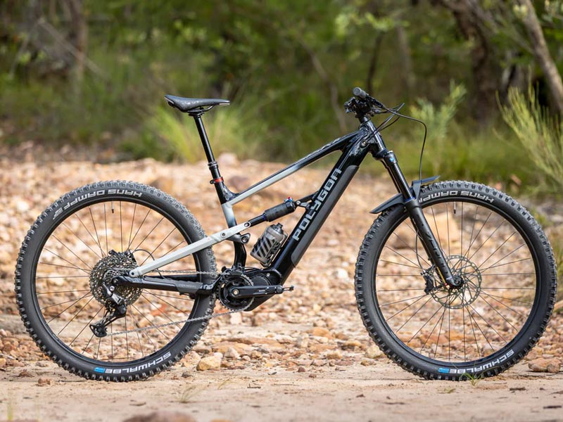
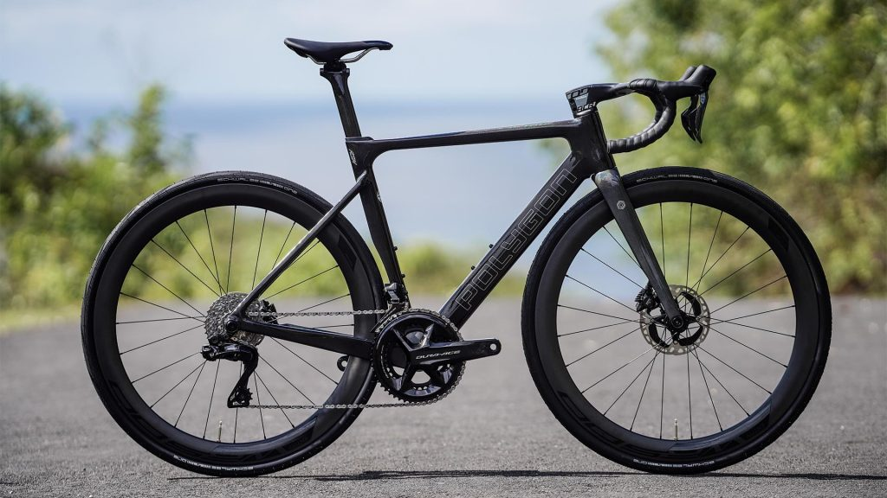
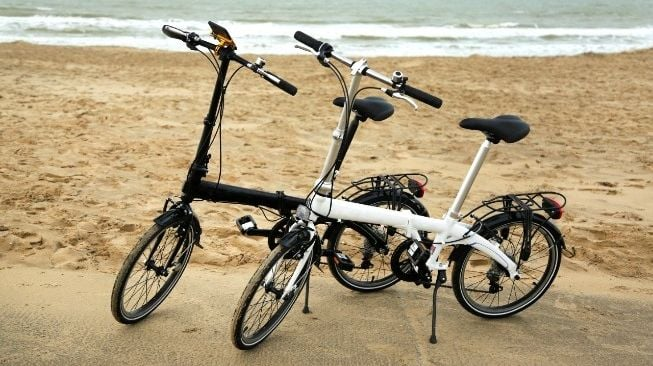

Mengenal Jenis-Jenis Sepeda Sesuai Kebutuhan
Sebelum mulai bersepeda, sangat penting untuk memilih jenis sepeda yang sesuai dengan medan dan tujuan Anda. Berikut adalah beberapa jenis sepeda yang paling populer:

Mountain Bike (MTB) / Sepeda Gunung
Dirancang untuk medan off-road, jalan tanah, dan bebatuan. Memiliki ban lebar bergerigi dan suspensi (depan atau ganda) untuk meredam guncangan. Sangat cocok untuk petualangan di alam bebas.

Road Bike / Sepeda Balap
Didesain untuk kecepatan di atas jalan aspal yang mulus. Ciri khasnya adalah ban yang tipis dan halus, serta stang melengkung (drop bar) agar posisi pengendara lebih aerodinamis.

Folding Bike / Sepeda Lipat
Sangat praktis untuk warga perkotaan yang menggunakan transportasi umum. Sepeda ini bisa dilipat menjadi kecil sehingga mudah dibawa ke dalam kereta atau dimasukkan ke bagasi mobil.